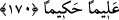

170- Ey insanlar! Peygamber size Rabbinizden gerçeği getirdi (bunda şüphe
yoktur), şu halde kendi iyiliğinize olarak (ona) îman edin. Eğer inkâr ederseniz,
bilin ki göklerde ve yerde ne varsa şüphesiz hepsi Allah’ındır. Allah geniş ilim ve
hikmet sâhibidir.
“Ey insanlar!” hitabı, bütün yaratılanları şamildir. “Peygamber size Rabbinizden
gerçeği getirdi.” Yâni Hz. Muhammed (s.a.v.) Kur’an ile gelmiştir. Kur’an’ın i’cazı,
onun gerçek peygamber oluşuna şehadet eden en büyük delildir. Ya da o, sizi yalnız
Allah’a kulluk etmeye ve onun dışındakilerden (mâsivâ) yüz çevirmeye çağıran bir
davet ile gelmiştir. Akl-ı selîm, onun hak olduğuna şehadet eder. Allah katından
gönderilmiştir, kendiliğinden peygamberlik iddiasında bulunmamıştır.
Şu halde o Rasûle îman ediniz. “Şu halde kendi iyiliğinize olarak ona” peygambere
ve onun Allah katından getirdiklerine “îman edin.” Yâni size küfürden daha hayırlı
olan îmana yöneliniz. Ya da sizin için daha hayırlı bir îmanla inanınız ki o, lisanen ve
kalben inanmaktır, demek olur.
“Eğer inkar eder” ve küfrünüzde ısrar eder“seniz bilin ki, göklerde ve yerde ne
varsa şüphesiz hepsi Allah’ındır.” O, gökleri, yeri ve buralarda bulunan bütün
mevcudatı bilir. Durum böyle olunca, ilk olarak kendilerine hitap olunan insanlar bu
cümleye dâhildirler. Bütün varlıklar, yaratma, mülk ve tasarruf bakımından Allah’a
âittir.” O’nun hükümranlığı dışına çıkamazlar. İşte bu gibi sıfatlara sahip olan yüce
yaratıcı, küfrünüz sebebiyle size de azâb etmeye kadirdir. Bunda şüphe yoktur.
Bir başka tefsire göre, mâdem ki göklerde ve yerde bulunanların tamamı Allah’ındır.
Durum böyle olunca O, size ve başkalarına muhtaç olmaktan müstağnîdir. Sizin
îmanınızın O’na bir faydası yoktur, inkar etmenizin de herhangi bir zararı dokunmaz.
Diğer bir tefsire göre, mâdem ki göklerde ve yerde bulunan her şey Allah’ındır. Öyle
ise O’nun, kendisine kulluk eden ve emirlerine boyun eğen kulları vardır.
“Allah geniş ilim sâhibidir” bütün varlıkların hallerini tek tek bilir. Küllî bilgisi ile
her şeyin, herkesin hâline vâkıftır. İnkar edenlerin halleri de evveliyetle bu bilgiye
dahildir.
“Ve hikmet sahibidir.” O’nun bütün fiilleri hikmetinin gereğidir. Yukarıda
zikredildiği vechile inkar edenlere azab etmesi de O’nun hikmetli işleri cümlesindendir.
Bil ki, Peygamber (s.a.v.) insanlar arasına gönderilen gaybî nûrun sûretidir. Kim onun
dâvetinin nûrunun feyzini alırsa hidâyete erer. Kime de bu nûr isâbet etmezse dalâlete
düşer.
Meşayih ittifak etmişlerdir ki, kendi nefsî isteklerine uyarak istediği şekilde hareket
etmemek için yularını meselâ bir köpeğe teslim eden kimse riyâzatı kabul etmeye, kendi
başına hayvanlar gibi istediği yere hareket eden kimseden daha elverişlidir.
Bu hususu anlayınca senin için gerekli olan başı boş hareket etmek değil, Rasûllerin